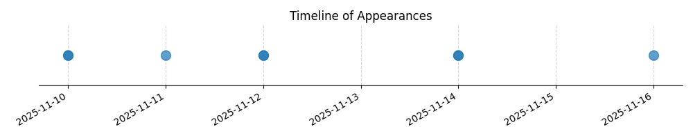

Kategorie: Letecké předpisy
Odpověď C je správná, protože letecké předpisy obvykle specifikují, že pro provozování specifických typů létajících zařízení, jako jsou výsadkové SLZ (Small Unmanned Aircraft Systems - malé bezpilotní letadlové systémy), jsou vyžadovány nejen platný pilotní průkaz, ale i specifická kvalifikace či oprávnění pro daný typ operace, v tomto případě pro výsadky. Možnost A je příliš specifická s odkazem na PPL/LAPL, které nemusí být jediné možné pro SLZ, a možnost B s 'pouze platným pilotním průkazem s předchozí zkušeností' je méně přesná než požadavek na formální kvalifikaci.

| Datum výskytu |
|---|
| 2025-11-16 |
| 2025-11-14 |
| 2025-11-12 |
| 2025-11-11 |
| 2025-11-10 |